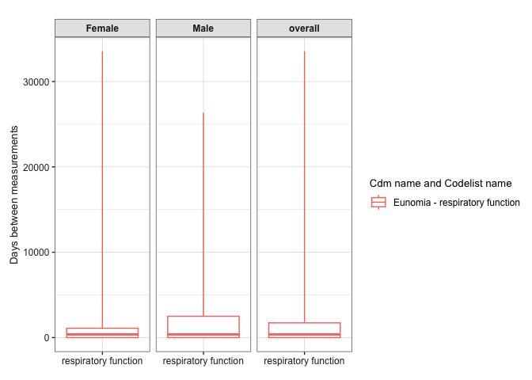

The MeasurementDiagnostics package helps us to assess the use of measurements present in data mapped to the OMOP CDM, either for the dataset as a whole or for a particular cohort.
Installation
You can install the development version of MeasurementDiagnostics from GitHub with:
# install.packages("pak")
pak::pak("ohdsi/MeasurementDiagnostics")Example
Let’s say we are going to do a study where we are going to be using measurements of respiratory function. We can use MeasurementDiagnostics to better understand the use of these measurements.
For this example we’ll use the Eunomia data.
library(duckdb)
library(omopgenerics)
library(CDMConnector)
library(dplyr)
library(MeasurementDiagnostics)
con <- dbConnect(duckdb(), dbdir = eunomiaDir())
cdm <- cdmFromCon(
con = con, cdmSchem = "main", writeSchema = "main", cdmName = "Eunomia"
)
cdm
#>
#> ── # OMOP CDM reference (duckdb) of Eunomia ────────────────────────────────────
#> • omop tables: person, observation_period, visit_occurrence, visit_detail,
#> condition_occurrence, drug_exposure, procedure_occurrence, device_exposure,
#> measurement, observation, death, note, note_nlp, specimen, fact_relationship,
#> location, care_site, provider, payer_plan_period, cost, drug_era, dose_era,
#> condition_era, metadata, cdm_source, concept, vocabulary, domain,
#> concept_class, concept_relationship, relationship, concept_synonym,
#> concept_ancestor, source_to_concept_map, drug_strength
#> • cohort tables: -
#> • achilles tables: -
#> • other tables: -Now we have a cdm reference with our data, we will create a codelist with measurement concepts.
respiratory_function_codes <- newCodelist(list("respiratory function" = c(4052083L, 4133840L, 3011505L)))
respiratory_function_codes
#>
#> - respiratory function (3 codes)And now we can run a set of measurement diagnostic checks, here stratifying results by sex.
respiratory_function_measurements <- summariseMeasurementUse(cdm, respiratory_function_codes, bySex = TRUE)Among our results is a summary of timings between measurements for individuals in our dataset. We can quickly create a plot of these results like so
plotMeasurementTimings(respiratory_function_measurements |>
dplyr::filter(variable_name == "time"))